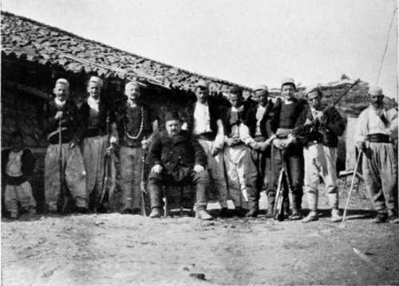
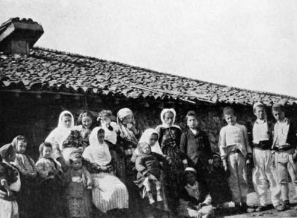
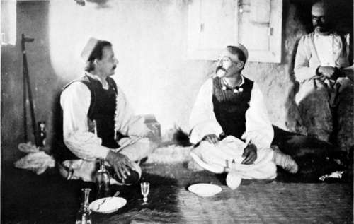

The Balkans Revisited : Albania. Part 7
Description
This section is from the book "Bird-Hunting Through Wild Europe", by R. B. Lodge. Also available from Amazon: Bird-Hunting Through Wild Europe.
The Balkans Revisited : Albania. Part 7
This family with whom I stayed, a self-invited guest for a week, treated me with the utmost kindness and courtesy. They were three brothers, Hilo, Filipo, and Drek Kanchay, and they all lived together with their wives and families, as is the custom here. In an unsettled country this patriarchal mode of living has its advantages, three families being three times as strong as one single family. They were Christians, Roman Catholics, of a sort, as are most of the Albanians, though there are many members of the Greek Church and Mohammedans among them ; but the Mohammedan influence is evident in many of their ways and customs. The women, for instance, do not cover their faces, but are kept very much in the background. They are merely servants, and almost beasts of burden, cutting and carrying in firewood, bringing water from the well, besides doing all the household work. They never presume to eat with the men, at all events when there are guests, but cook and bring in the meal, eating what is left when and how they can afterwards. These people had lately built a new house, since my visit last year, of which they were very proud. It was quite one of the best I have seen among the country people, actually provided with a chimney, through which some at least of the smoke could escape, and with four glazed windows which would open and shut! As a rule the smoke escapes as best it can through the holes in the roof and walls, and to sit inside enveloped amid rolling clouds of wood-smoke is a very trying experience.
In this house lived the men and boys old enough to carry a rifle, while the women and children kept entirely to the old house, which was quite detached.
My Albanian Hosts-The Fat Man In Middle Is A Visitor
Their Womenkind And Children
But the new house, though so well built of stone with tiled roof, could only be entered through the stable ; this is the usual fashion. In two-storied houses the cattle and horses live on the ground floor, and the people above. The smell can be imagined. The same arrangement generally prevails also in Montenegro.
The fire of logs burnt on the open hearth, round which were spread mats, with sheepskin rugs for guests, on which we all sat cross-legged or reclining against cushions. At night two thin mattresses were unrolled from the corner and spread one on each side of the fire on the earthen floor, one for me, the other for Hilo Kanchay, the elder brother, the rest lay down on the mats about the floor, just as they were. They never remove any of their clothes, even sleeping in their head-gear, the white Albanian fez ; though the head-cloth which is wound round the fez over the head and under the chin is taken off on entering the house. It is not considered good form to step on the mats in boots. On approaching the fire, boots, or opankis-the raw-hide sandals generally worn-are taken off, and left at the edge ready to be resumed on rising.
An hour before the midday meal or the evening meal, bottles of raki, colourless spirit flavoured with aniseed, were brought out and passed round, and a plate of sour milk cheese, eaten in the fingers, placed in the middle on the floor. Cigarettes made of excellent home-grown tobacco are smoked incessantly in long wooden tubes about two feet long. The raki luckily is not very strong, for it is passed round continually. As a guest I had a small flask and a liqueur-glass ; the rest drank from the bottle. And though I drank as little as possible, it was impossible to avoid taking a little each time they raised their bottle to me with the Italian 'Viva,' or the Albanian 'Put-mlr.' Then I used to respond either 'Viva ' or 'Bof-mir.' With two of the brothers I could speak pretty freely in Italian, as also with a sporting old chap called 'Zef,' who attached himself to my service. This last was a Scutarine, but I fancy had left Scutari for the good of his health somewhat suddenly about two years before.
At first I used to have my meals served separately, but after I had been with them a few days and had got to know them better, I hinted that I should prefer to eat with them ; and I think that this made a good impression and gratified them all.
When dinner was ready the raki and cheese were put away, and a large round wooden table about four inches high brought in, while we all squatted round it, provided each with a long-handled wooden spoon. Then a large flat round basket was brought, in which was a big round loaf of maize bread, which just fitted it. This was cut up by the head of the family after devoutly crossing himself, and a large slab placed in front of each person. Then a bowl of stewed meat was brought in and put in the middle of the table. Each man then dipped his spoon in that part of the central dish which was opposite to him, using the slab of bread as a plate, or fished out a piece of meat with the fingers. I used an aluminium plate out of my basket, and generally had first dip out of the dish. The cooking was really very good, the meat tender and well flavoured, and the home-made maize bread excellent. But during Lent they fast rigorously, living entirely on bread, cheese, and huge leeks, the biggest I have ever seen. In the morning before riding off into the forest I used to have a jug of hot buffalo milk, with bread broken into it. This buffalo milk is better and richer than any cow's milk, and the cheese from it is first-rate. These ungainly-looking animals are largely used for beasts of burden, ploughing, and for pulling the curious carts of the country with huge solid wheels about eight feet across, which make a slow and tedious progress of about two miles an hour, to the accompaniment of the most hideous and unearthly groanings and creakings. The first time I heard one of these carts I couldn't for the life of me imagine what was coming, for I could hear the noise long before I could see the cause of it.
Albanian Interior: Entertaining A Guest
Continue to:
- prev: The Balkans Revisited : Albania. Part 6
- Table of Contents
- next: The Balkans Revisited : Albania. Part 8